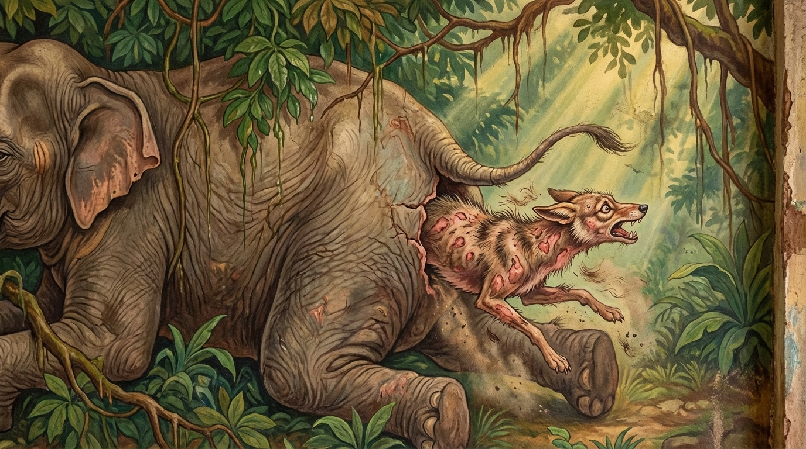

8. සිඟාල ජාතකය (148)
“නාහං පුනං න ච පුන” යන මේ ජාතක දේශනාව බුදුරජාණන් වහන්සේ ජේතවනාරාමයේ වැඩවසන සමයෙහි, ක්ලේශයන් මැඩපැවැත්වීම අරබයා දේශනා කළ සේක. සැවැත් නුවර මහත් ධන සම්පත් ඇති, ඔවුනොවුන් මිතුරු වූ සිටු පුත්රයෝ පන්සියයක් පමණ දෙනා බුදු දහම අසා, ශාසනය කෙරෙහි පැහැදී පැවිදි වී, කෝටියක් ධනය අතුරා ගත් බිමේ (ජේතවනයේ) වාසය කළහ. දිනක් මධ්යම රාත්රියෙහි ඔවුන් තුළ ක්ලේශ සහගත සිතුවිලි පහළ විය. ඔවුහු එයින් කලකිරී, තමන් විසින් අත්හළ කෙළෙස් නැවත ගැනීමට සිතූහ. බුදුරජාණන් වහන්සේ එම වේලාවෙහි සර්වඥතා ඥානය නමැති පහන් ටැඹ ඔසවා, ජේතවනය තුළ කවර භික්ෂූහු ඇලී සිටිත්දැයි ඔවුන්ගේ අදහස් බලන සේක්, එම භික්ෂූන්ගේ සිත් තුළ කාමරාග සහගත සිතුවිලි උපන් බව දැනගත් සේක. බුදුරජාණන් වහන්සේ වනාහි, එකම පුතකු සිටින මවක් ඒ පුත්රයා රකින්නාක් මෙන් ද, එකම ඇසක් ඇති පුරුෂයකු ඒ ඇස රකින්නාක් මෙන් ද තම ශ්රාවකයන් රකිති. පෙරයම ආදී යම් යම් වේලාවක ඔවුන්ට කෙළෙස් උපදී ද, එම කෙළෙස් වැඩීමට ඉඩ නොදී ඒ ඒ වේලාවෙහිම ඒවා මැඩපවත්වති. එවිට බුදුරජාණන් වහන්සේට මෙබඳු සිතක් පහළ විය. “මෙය සක්විති රජුගේ නගරය ඇතුළතම සොරුන් පහළ වූවාක් මෙනි. දැන්ම මම ඔවුන්ට දහම් දෙසා කෙළෙස් මැඩපවත්වා රහත් බව ලබා දෙමි” යි සිතා, ගන්ධ කුටියෙන් නික්ම මිහිරි ස්වරයෙන් ධර්ම භාණ්ඩාගාරික වූ ආනන්ද තෙරුන් ඇමතූහ. තෙරුන් වහන්සේ ද “කිම ස්වාමීනි”යි වහා අවුත් වැඳ සිටියහ. “ආනන්ද, ජේතවනය තුළ වැඩවසන යම්තාක් භික්ෂූහු වෙත් ද, ඒ සියල්ලන්ම ගන්ධ කුටි මළුවට රැස්කරවන්න” යැයි වදාළහ. එවිට ආනන්ද තෙරුන්ට මෙබඳු සිතක් පහළ විය. “ඉදින් මම ඒ භික්ෂූන් පන්සියය පමණක් රැස් කරන්නේ නම්, ‘බුදුරජාණන් වහන්සේ අප සිත කෙළෙස්වලට වසඟ වූ බව දැන ගත්හ’ යි ඔවුන්ට සිතී, ඇතිවන සිත් තැවුල ධර්මාවබෝධයට බාධාවක් වන්නේය. එනිසා සියලු භික්ෂූන් රැස් කරවන ලෙස දැන්විය යුතුය”. මෙසේ සිතූ තෙරුන් වහන්සේ, “එසේය, ස්වාමීනි” යි බුදුරජාණන් වහන්සේගේ වචනය පිළිගෙන, යතුර ගෙන කුටියෙන් කුටියට ගොස් සියලු භික්ෂූන් ගන්ධ කුටි මළුවට රැස්කරවා බුද්ධාසනය පැනවූහ.
බුදුරජාණන් වහන්සේ පර්යංකය බැඳ, කය ඍජුව තබා, ගල් තලාවක් මත පිහිටි මහාමේරුව මෙන් පනවන ලද බුද්ධාසනයෙහි වැඩ සිටිමින්, එකිනෙක වෙලී ගිය යුගල වශයෙන් ෂඩ්වර්ණ බුද්ධ රශ්මි මාලාවන් විහිදුවූ සේක. පාත්රයක් පමණ ද, කුඩයක් පමණ ද, කුළුගෙයක් පමණ ද වූ ඒ රශ්මි මාලාවන් සිඳී සිඳී අහසෙහි විදුලි කෙටීම් මෙන් ගමන් කළේය. මුහුදු කුස කළඹා ළා හිරු උදාවන කාලයක් මෙන් බැබළුණි. භික්ෂු සංඝයා ද බුදුරජාණන් වහන්සේ වැඳ, ගෞරව සිත පෙරදැරිව, රත් කම්බිලි තිරයකින් වට කරන්නාක් මෙන් බුදුරජුන් පිරිවරා වැඩ සිටියහ. ඉක්බිති බුදුරජාණන් වහන්සේ බ්රහ්ම ස්වරය විහිදුවා භික්ෂූන් අමතා මෙසේ වදාළ සේක: “මහණෙනි, භික්ෂුවක් විසින් කාම විතර්ක, ව්යාපාද විතර්ක, විහිංසා විතර්ක යන මේ අකුසල විතර්කයන් සිතීම නුසුදුසුය. සිතෙහි හටගන්නා ක්ලේශය ‘සුළු දෙයකැ’යි සිතා අවතක්සේරු කිරීම නොවටී. ක්ලේශය වනාහි සතුරකු හා සමානය. කුඩා සතුරකු යැයි කෙනෙක් නැත. ඉඩක් ලැබුණු වහාම ඔහු විනාශයට පමුණුවයි. එලෙසම ක්ලේශය ද සුළුවට හටගත්ත ද වැඩෙන්නට ඉඩ ලැබුණොත් මහා විනාශයක් ඇති කරයි. මේ ක්ලේශයෝ නම්:
- හලාහල විෂ වැනිය;
- ඉවත් කළ සමක් ඇති ගඩුවක් වැනිය;
- ආශිවිෂ සර්පයකු හා සමානය;
- හෙණ ගින්නක් සමානය.
එබැවින් මේවා ඇසුරු කිරීම නුසුදුසුය; සැක කටයුතුය. උපන් උපන් ක්ෂණයෙහිම ප්රත්යවේක්ෂා බලයෙන් හා භාවනා බලයෙන් මොහොතක් හෝ සිතෙහි නොතබා, නෙළුම් පතක් මත දිය බිඳක් යම් සේ ලිස්සා යයි ද, එමෙන් බැහැර කළ යුතුය. පෙර පඬිවරු ද සුළු වූ ක්ලේශය පවා දොස් සහිත යැයි සලකා, නැවත සිත තුළ නූපදින ලෙසටම මැඩපැවැත්වූහ” යි වදාරා අතීත කතාව ගෙනහැර දැක්වූ සේක.
අතීතයේ බරණැස් නුවර බ්රහ්මදත්ත රජු රාජ්ය කරන සමයේ, බෝධිසත්වයෝ සිවල් යෝනියෙහි උපත ලබා වනයෙහි ගං ඉවුරක් අසල වාසය කළහ. එකල මහලු ඇතෙක් ගං ඉවුරේදී මරණයට පත්විය. ගොදුරු සොයා යන සිවලා එම ඇත් කුණ දැක, “මට මහත් ගොදුරක් ලැබුණේ ය” යි සිතා ගොස් සොඬය සැපීය. එය නගුල් ඉසක් සැපූ කලක් මෙන් විය. එහි කෑ යුතු යමක් නැතැයි සිතා දළය සැපීය. එය කණුවක් සැපූ කලක් මෙන් විය. ඉන්පසු ඔහු සිරුරේ තැන් තැන් විමසා බැලීය:
- කන සැපූ විට කුල්ලක් සැපුවාක් මෙන් විය.
- බඩ සැපූ විට ධාන්ය අටුවක් සැපූ කල මෙන් විය.
- පාදය සැපූ විට වංගෙඩියක් සැපුවාක් මෙන් විය.
- වලිගය සැපූ විට මෝල් ගසක් මෙන් විය.
“මේ කිසි තැනක කෑ යුතු, රස විඳිය යුතු දෙයක් නැතැ”යි සිතා, අසල ඇති මෘදු තැන් සොයමින් ගොස් වස මඟ (ගුද මාර්ගය) සැපීය. එය මෘදු කැවුමක් මෙන් දැනිණි. “දැන් මට මේ සිරුරෙහි කෑ හැකි මෘදු තැනක් ලැබුණේ ය” යි සතුටු වී, එතැන් පටන් කමින් කුස තුළටම රිංගා, වකුගඩු හා හෘදය මාංශ ආදිය කමින්, පිපාසය ඇති වූ විට ලේ බොමින්, නිදා ගැනීමට අවශ්ය වූ විට බඩ ඇතුළේම වැතිර නිදා ගනී.
එවිට සිවලාට මෙසේ සිතුණි: “මේ ඇත් සිරුර වාසයට පහසු බැවින් ගෙයක් වැනිය. කෑමට අවශ්ය වූ විට බොහෝ මස් ද තිබේ. දැන් මට වෙනත් තැනක් හෝ වෙනත් කාර්යයක් අවශ්ය නැත”. ඌ වෙනත් තැනකට නොගොස් ඇත් කුස තුළම මස් කමින් වාසය කරයි. කල් යත්ම තද සුළඟ සහ දැඩි සූර්ය තාපය නිසා ඒ ඇත් කුණ වියළී, හැකිළී ගියේය. සිවලා ඇතුළු වූ දොරටුව ද වැසී ගියේය. කුස තුළ දැඩි අන්ධකාර විය. සිවලාට ලෝකාන්තරික නිරයේ වාසය කරන්නාක් මෙන් දැනුණි. මළකඳ වියළෙත්ම මස් ද වියළී ගියේය. ලේ ද සිඳී ගියේය. පිටවීමට දොරටුවක් නොලැබූ සිවලා, බියට පත්ව එහා මෙහා දුවමින්, බිත්තිවල හැප්පෙමින් පිටවීමේ දොරටුවක් සොයමින් වෙහෙසෙන්නට විය. මෙසේ උණු සැළියක දමන ලද පිටි ගුලියක් මෙන් කුස තුළ තැම්බෙමින් දින කිහිපයක් ගත වූ පසු මහා මේඝයක් වැස්සේය. එවිට ඒ ඇත් කුණ තෙමී, ඉදිමී, තිබූ ස්වභාවයටම පත් විය. වැසී තිබූ වස මඟ (ගුද මාර්ගය) විවෘත වී තාරකාවක් මෙන් පෙනෙන්නට විය. සිවලා ඒ සිදුර දැක, “දැන් මම ජීවිතය ලැබුවෙමි” යි සිතා, ඇත් හිස දෙස සිට වේගයෙන් දිව අවුත් වස මඟෙහි හිස ගසා ඉවතට පැන්නේය. උගේ සිරුර තෙත්වී ඉදිමී තිබූ බැවින් සියලු ලෝම වස මඟෙහි ඇලී ගැලවී ගියේය. තල් කඳක් මෙන් ලොම් නැති සිරුරින් යුතුව, බියට පත් සිතින් යුතුව මොහොතක් දුව ගොස් නතර වී, තමාගේ විරූපී සිරුර දෙස බලා මෙසේ සිතීය: “මේ දුක මට වෙන කෙනෙක් කළ දෙයක් නොවේ; ලෝභය හේතුවෙන්, ලෝභය කරණ කොටගෙන, ලෝභය නිසාම මා විසින් කරගන්නා ලද්දකි. දැන් පටන් මම ලෝභයට වසඟ නොවන්නෙමි. නැවත කිසි දිනෙක ඇත් සිරුරකට රිංගන්නේ නැතැ”යි සංවේගයට පත්ව මේ ගාථාව ප්රකාශ කළේය.

“මම නැවත නම් ඇත් කුසකට නොයමි; නැවත ද නොයමි; යළි යළිත් නොයමි. මම ඒ තුළට පිවිසීමෙන් මරණ බියෙන් ඉතා තැති ගත්තෙමි.”
එහි “න චාපි අපුනප්පුනං” (යළි යළිත් නොයමි) යන්නෙහි ‘අ’ යන්න නිපාත මාත්රයකි (පද පූරණයකි). මේ මුළු ගාථාවෙහිම අර්ථය මෙයයි: මම මෙතැන් සිට නැවත ද, එයිනුත් නැවත ද, පෙර කී වාරයන්ටත් වඩා නැවත නැවතත් ඇත් සිරුරක් නමැති “හත්ථිබොන්දිං න පවෙක්ඛාමි” (ඇත් කඳ තුළට නොවදිමි). ඒ කුමක් නිසාද යත්; “තථා හි භයතජ්ජිතො” - මම මේ ඇත් කුසට පිවිසීම නිසා මරණ බියෙන් තැතිගෙන, මහත් සංවේගයට පත්වූ හෙයිනි.
මෙසේ පවසා එතැනින් පලා ගිය ඔහු, නැවත එම ඇත් සිරුර දෙස හෝ වෙනත් ඇත් සිරුරක් දෙස හැරී බැලුවේවත් නැත. එතැන් පටන් ඒ සිවලා ආශාවට වසඟ නොවූවෙක් විය.
බුදුරජාණන් වහන්සේ මේ ධර්ම දේශනාව ගෙනහැර දක්වා, “මහණෙනි, සිතෙහි උපන් ක්ලේශයන්ට වැඩෙන්නට ඉඩ නොදී, ඒ ඒ අවස්ථාවේදීම ඒවා මැඩපැවැත්වීම වටින්නේය” යි වදාරා, චතුරාර්ය සත්යය ප්රකාශ කොට ජාතකය නිම කළ සේක. සත්ය දේශනාව අවසානයේදී ඒ භික්ෂූන් පන්සියයම රහත් ඵලයට පත් වූහ. සෙසු පිරිස අතරින් සමහරු සෝවාන් වූහ; සමහරු සකෘදාගාමී වූහ; සමහරු අනාගාමී වූහ. එසමයෙහි සිවලා වී උපන්නේ දැන් බුදු වූ මම ම ය.”
අටවැනි වූ සිඟාල ජාතක වර්ණනාවයි.